Паметници
Мястото, на което можем да се връщаме при починал близък, обикновено
носи утеха и топлина. Там можем да почетем паметта му, да поднесем
цветя или просто да прекараме време в размисли.
 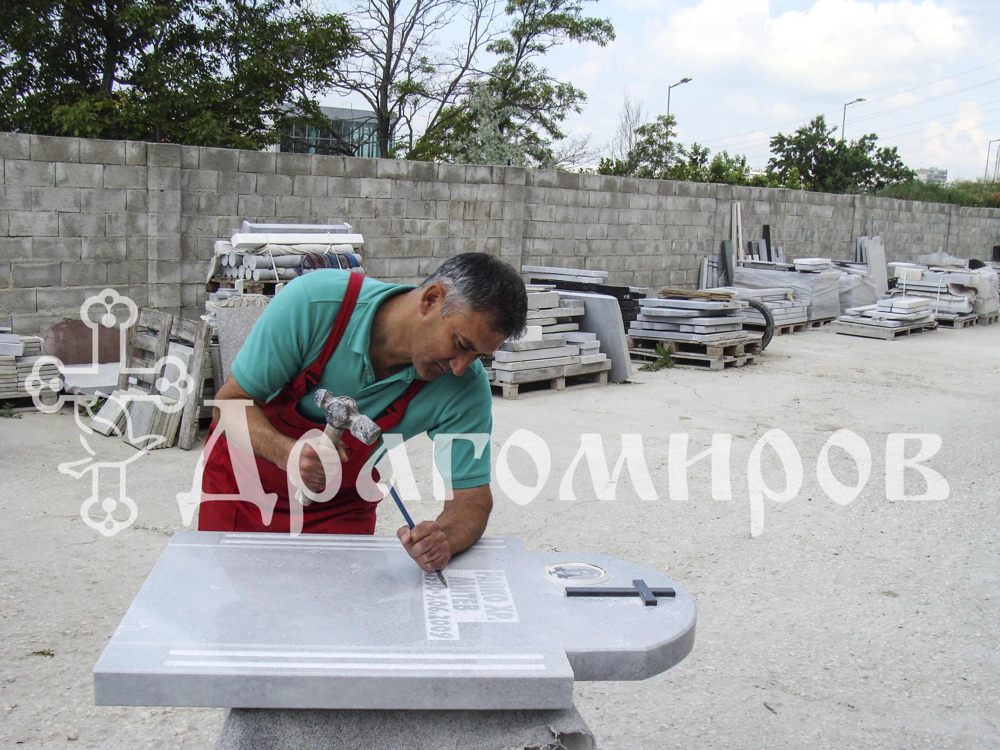
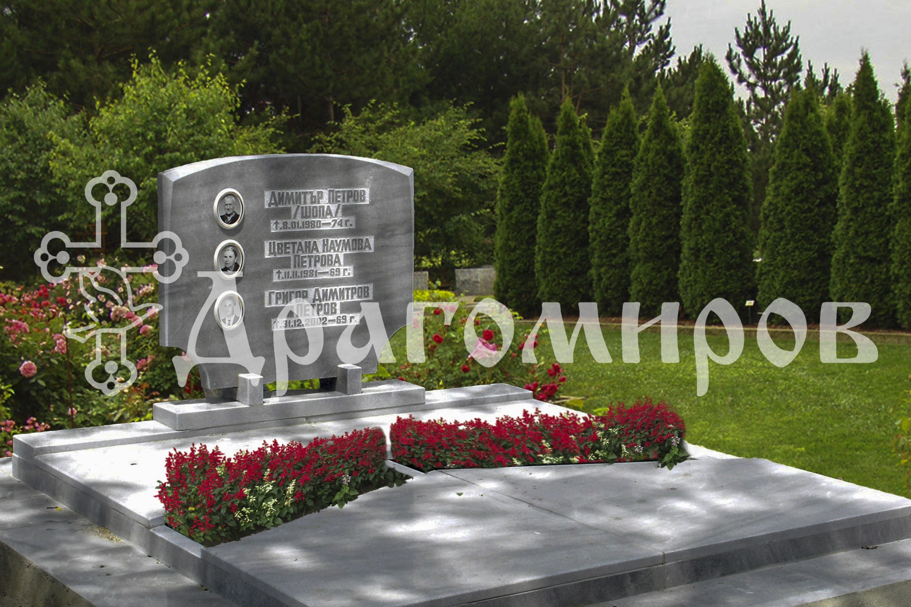
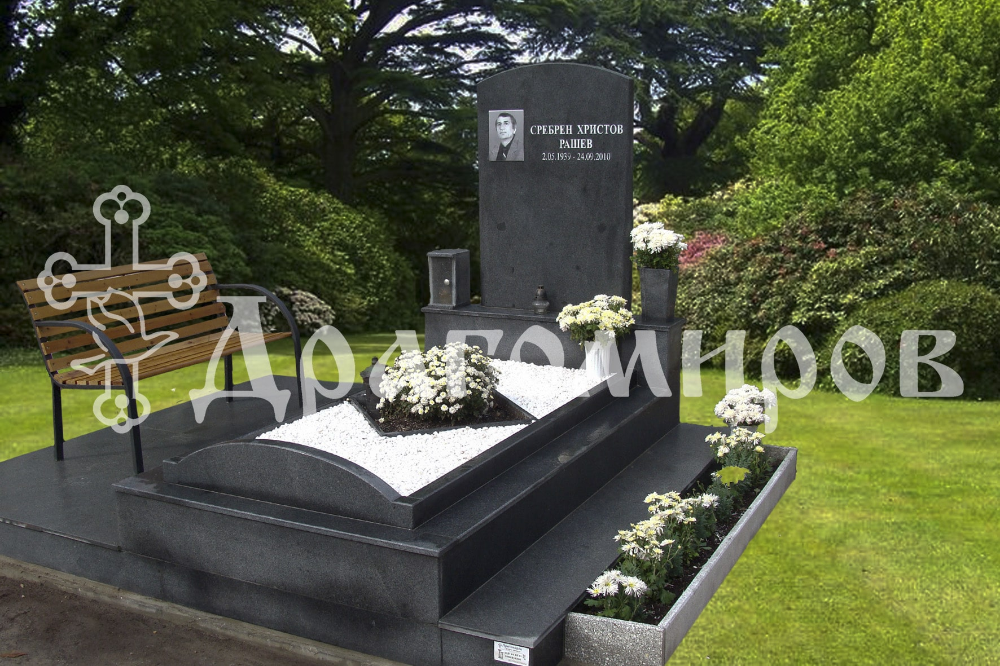
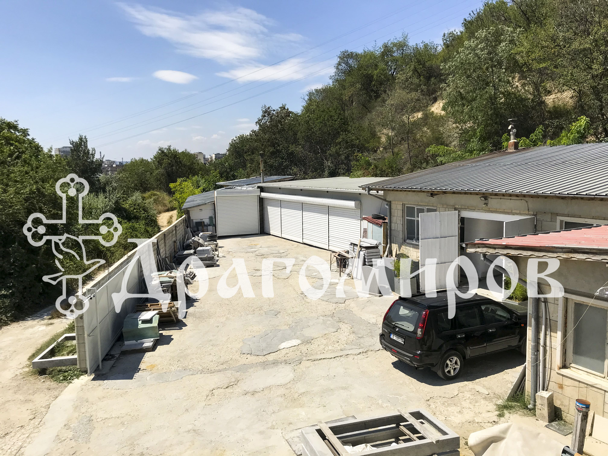
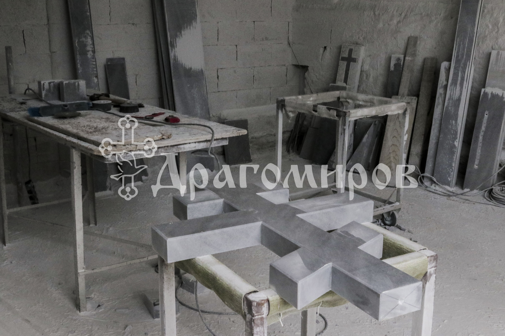
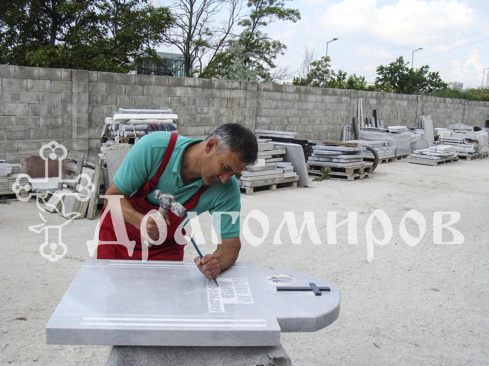
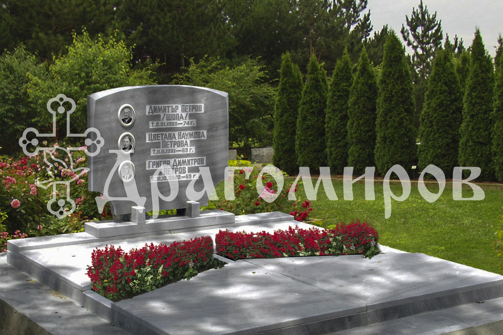
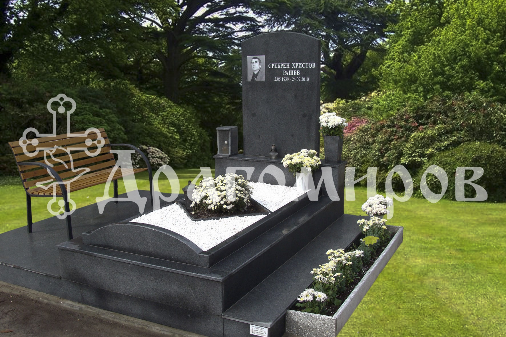
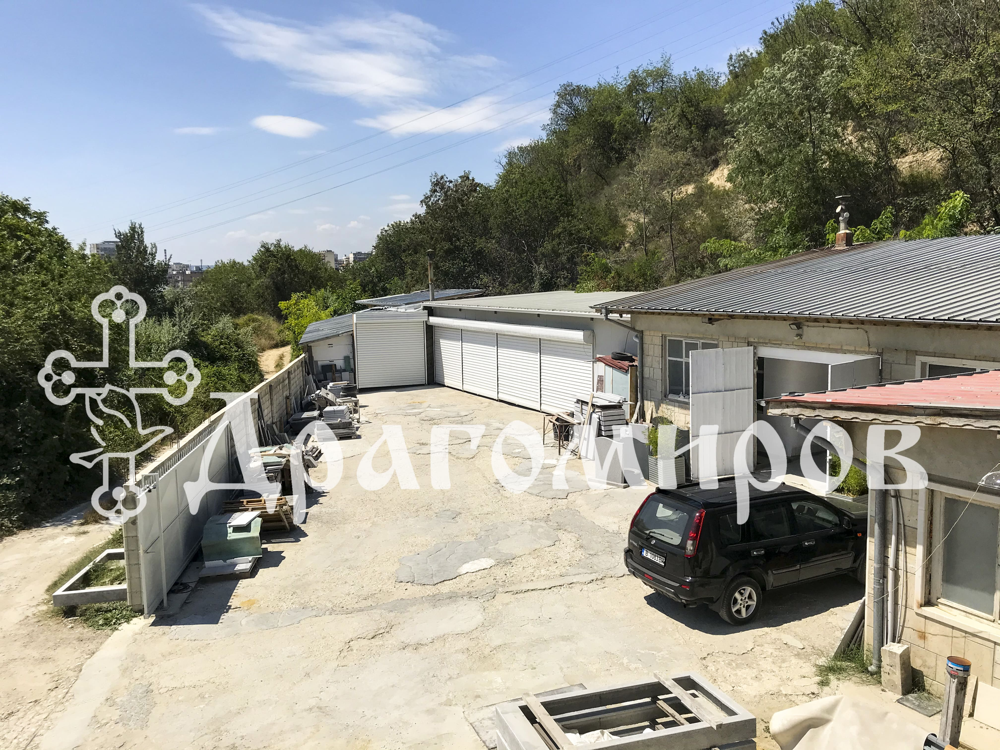
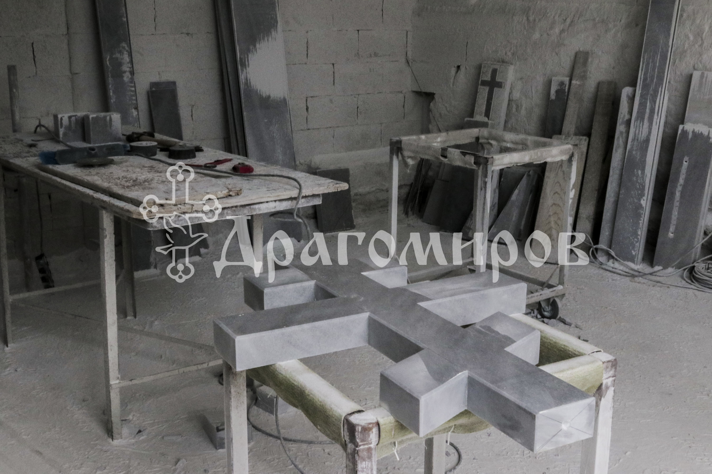
Траурна агенция
Драгомиров разполага със собствен каменоделски цех и разнообразна
селекция от паметници, както и с екип от професионалисти, които ще Ви
съдействат при избора на подходящия паметник.
Ние от Траурна агенция Драгомиров имаме дългодишен опит и при изработването
на надгробни паметници и плочи, както и всякакви изделия от мрамор и гранит.
Всички клиенти на Траурна агенция Драгомиров, организирали погребение имат
право на отстъпка при изработка на паметник.
Специално предложение
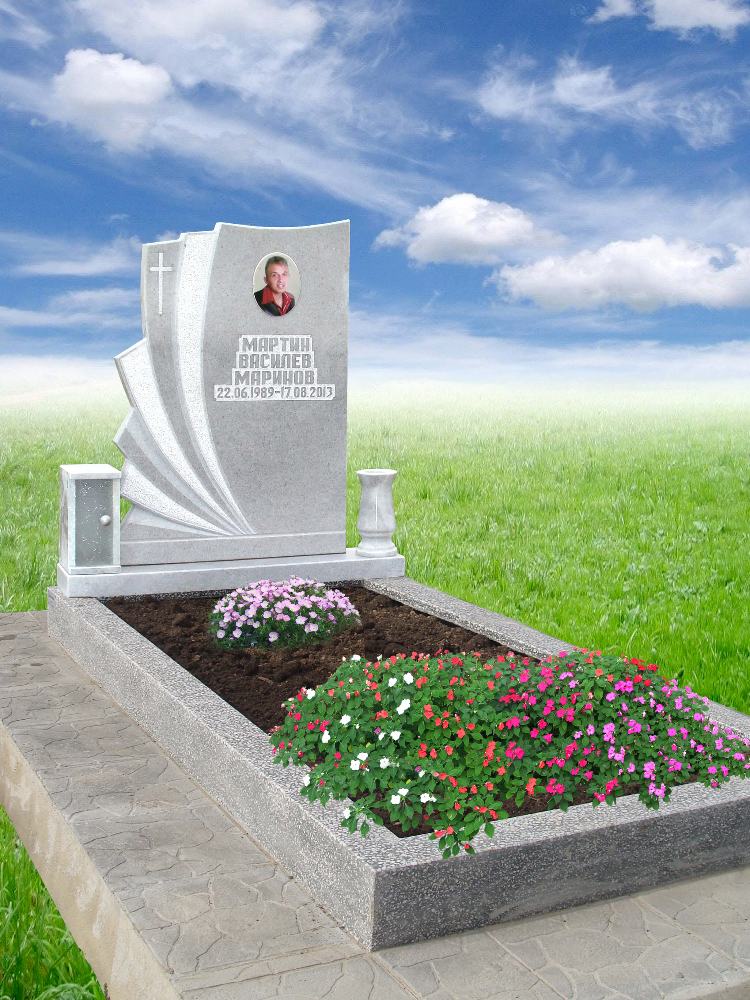
Мраморен паметник - размер до 70/90 с постамент
Бетонна база с монолитен мозаечен бордюр и пътека тротоарни плочи
Пакетна цена: 790лв
Специално предложение
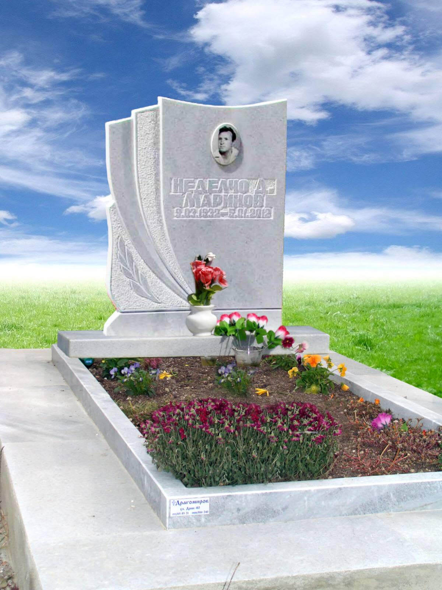
Мраморен паметник - размер до 70/90 с постамент
Бетонна база с масивни мраморни бордюри и пътека тротоарни плочи
Пакетна цена: 990лв
Често Задавани Въпроси
Колко струва едно погребение?
Всяко погребение е различно и за
организацията му ние (като погребална агенция) се съобразяваме изцяло с
личните желания на клиентите си. За нас не е възможно да посочим крайна
цена без да сме се запознали с персоналните предпочитания на клиентите,
но това което със сигурност можем да Ви споделим са цените, които не зависят от нас:
Изкопаване на нов/стар гроб в Гробище Тополи, Виница, Галата- 400 лв
Изкопаване на стар наследствен гроб в Централни Гробища- 400 лв
Нова гробница в Централни гробища Варна- 3400 лв
Семейна гробница в стар наследствен гроб в Централни гробища – 1500 лв.
Нова гробница в Тополи- 1800 лв
Колко струва кремация?
Организирането на кремацията зависи
до голяма степен от желанията на нашите клиенти, затова и цената на различните
кремации варира значително. Това, което можем да ви споделим със сигурност са
цените, които не зависят от нас:
Пакет Кремация в Крематориум Варна (вкл. таксата на Крематориума и урната)- 499 лв
Урнов гроб в Централни гробища Варна- 1300 лв
Урнова ниша в Централни гробища Варна- 500 лв
Какви документи са ми нужни за организиране на погребение?
Първото важно условие за организирането на погребението е
лекар да напише съобщение за смърт. Ако личният Ви лекар
не се отзове, Траурна Агенция Драгомиров разполага с лекар,
който да напише съобщението за смърт. След като това се случи
ние ще се погрижим и за издаването на смъртен акт.
Имате ли лекар, който да установи смъртта?
Да, ние от Траурна Агенция Драгомиров разполагаме с лекар, който да установи смъртта и да напише съобщение за смърт, в случай, че личният Ви лекар не се отзове.
Има ли възможност погребението да се извърши в Централни гробища?
Да, може да закупите семейна гробница или да използвате стар семеен гроб. Виж още
Правите ли некролози?
Да, изработваме цветни и черно-бели некролози. Разполагаме с широка гама модели за некролози и професионалисти, които ще Ви помогнат при избора. Некролози може да поръчате в един от офисите ни.
Може ли да поръчам венец?
Да, Траурна Агенция Драгомиров предлага изкуствени и естествени венци в различни размери. Галерията с венците може да видите тук.
Какво е работното време на офисите?
Понеделник
09:00ч.–17:30ч.
Вторник
09:00ч.–17:30ч.
Сряда
09:00ч.–17:30ч.
Четвъртък
09:00ч.–17:30ч.
Петък
09:00ч.–17:30ч.
Събота
09:00ч.–17:30ч.
Неделя
09:00ч.–17:30ч.
Какво се прави при кремация? / Какво представлява кремацията?
Кремацията е траурен ритуал, при който тялото на покойника се поставя
в крематориум (специално изградена пещ) и се изгаря при много висока
температура. Горивният процес е напълно автоматизиран и не позволява
влизане на повече от един ковчег. Останките от тялото се поставят в урна.
Урната може да бъде поставена в гроб или в урнова ниша. Ако близките на
покойника желаят могат да задържат урната в дома си или да разпръснат прахта.
Погребение или кремация?
Решението как да изпратим нашия починал близък също зависи от доста фактори(финансови, религиозни и други), които е добре да бъдат взети предвид. Агентите на Траурна Агенция Драгомиров са професионалисти с дългогодишен опит и ще Ви посъветват за най-подходящия вариант във Вашата ситуация.
Коя траурна агенция във Варна да избера?
Дългогодишният ни опит ни е научил, че за жалост и в нашия
бранш има нечестни и безскрупулни хора. Ние, от Траурна
Агенция Драгомиров Ви съветваме да изберете внимателно
вашата погребална агенция, като се допитате до близки,
приятели или дори до отзиви в Google. Това е важен и отговорен
избор, който трябва да направите, за да изпратите починалия
близък достойно и без допълнителна горчивина.
Кога се слага паметник?
Прието е паметникът да е готов за годината от загубата на
починалия близък, но може да бъде поставен и по-рано.
Всички клиенти, организирали погребение с Траурна Агенция
Драгомиров получават ваучер за отстъпка при поръчка на паметник.